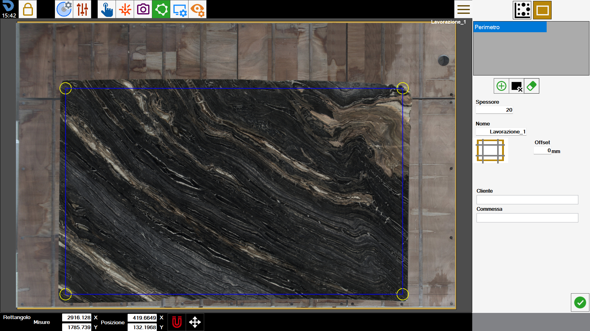
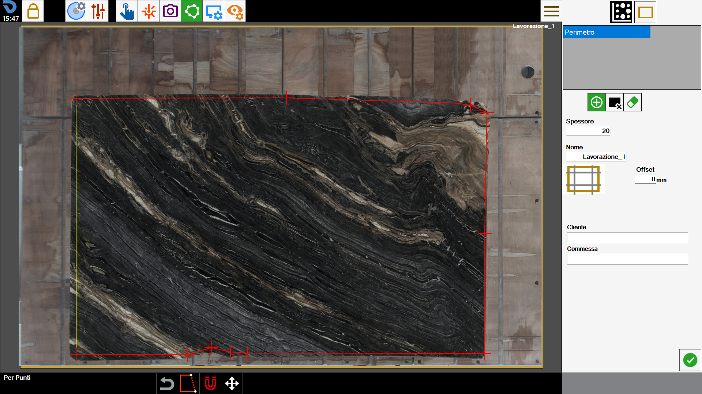
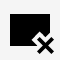
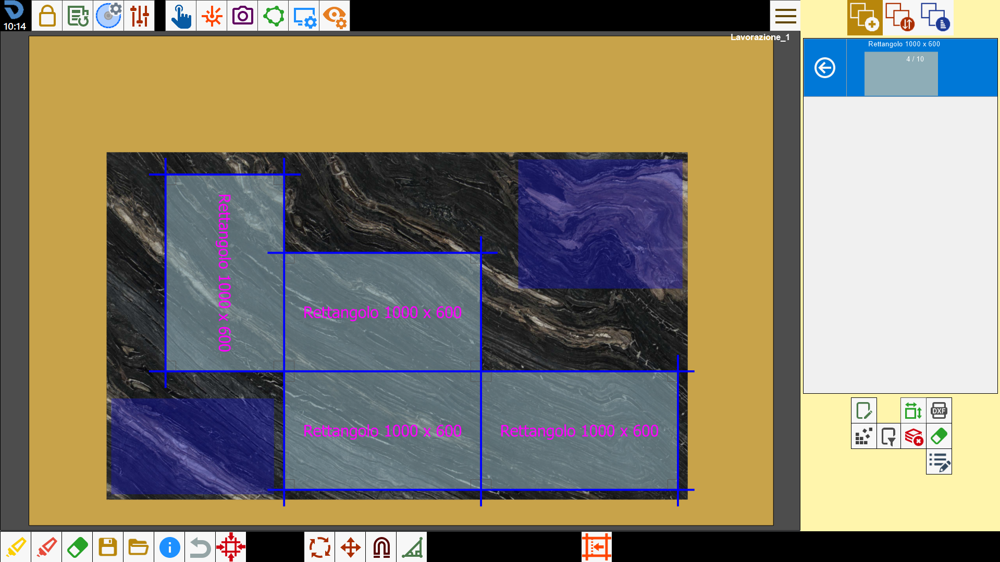

Per poter funzionare, il programma deve conoscere il bordo della lastra su cui lavorare. Questa funzione permette di tracciare il perimetro.

Modalità di creazione del perimetro
Il programma permette all’operatore di disegnare il perimetro utilizzando una delle seguenti modalità:
Modalità rettangolo | |
 | Modalità per punti |
In ogni momento della creazione del perimetro, è possibile passare da una modalità all’altra.
Passando dalla modalità “per punti“ alla modalità “rettangolo“, il perimetro verrà convertito in rettangolo, e si perderanno tutti i vertici del poligono.
Verrà chiesta conferma per poter procedere in questa operazione.
Rettangolo
Questa modalità permette di creare perimetri dalla forma rettangolare.
Per cambiare la dimensione e la posizione del rettangolo è possibile trascinare i cerchi gialli sull’area di lavoro, oppure modificando i valori indicati nella barra sottostante.

Misure | Dimensioni sull’asse X e sull’asse Y del perimetro. |
Posizione | Coordinate del vertice in basso a sinistra del rettangolo rispetto al vertice in basso a sinistra del banco. |
Per punti
Questa modalità permette di creare poligoni dalla forma poligonale arbitraria.
Per fare ciò, l’operatore può disporre i punti che formano il perimetro nelle posizioni desiderate come mostrato nella figura sottostante.

In questa modalità, è possibile interagire con il perimetro utilizzando i seguenti pulsanti:
 | Chiusura perimetro |
Rimozione ultimo punto |
Una volta chiuso, il perimetro diventerà di colore blu, e i suoi vertici indicati da cerchi gialli.
Sia durante la fase di creazione che in presenza di un perimetro chiuso, sarà sempre possibile spostare i vertici sull’area di lavoro per migliorare la precisione.
Barra inferiore
L’operatore può interagire con un perimetro presente sull’area di lavoro utilizzando i pulsanti situati nella sezione inferiore della schermata.
Calamita su laser a croce | |
 | Spostamento del perimetro |
Creare un nuovo perimetro
Il programma consente di creare più di un perimetro su cui disporre i pezzi per la lavorazione.
Inoltre, è possibile definire delle zone della lastra su cui non è possibile inserire alcun pezzo.
 | Perimetro |
 | Area da evitare |
Cancella perimetro |
I perimetri creati sono visibili nell’elenco in alto a destra. Per modificare un perimetro basta selezionarlo sull’area di lavoro oppure la voce corrispondente all’interno dell’elenco.
Il perimetro attualmente selezionato presenta i contorni blu e i vertici in giallo, mentre i rimanenti possono essere distinti anche in base al colore: verde per i perimetri delle lastre, arancione per le aree da evitare.

Da questa schermata è possibile aggiungere dei tagli di detensionamento alla lastra.
 | Intestazione della lastra |
Per completare la creazione del perimetro, viene richiesto all’operatore di inserire alcune informazioni riguardanti la lavorazione che deve essere effettuata.
Spessore | L’operatore deve indicare lo spessore della lastra presente sul banco di lavoro. |
Nome | Nome da assegnare alla lavorazione della lastra. |
Cliente | Viene indicato il nome del cliente per cui si svolge la commessa. È un campo facoltativo. |
Commessa | Viene indicato un identificativo per la commessa. È un campo facoltativo. |
Spessore della lastra e nome della lavorazione sono campi obbligatori da inserire prima di confermare il perimetro.
Al contrario, non è necessario compilare le informazioni relative alle proprietà aggiuntive sottostanti.
Aree da evitare
Le aree da evitare sono zone della lastra che l’operatore desidera non rendere disponibili per il posizionamento dei pezzi sulla lastra.
Le ragioni per questo possono essere la presenza di rotture sul materiale, di vene poco estetiche o la necessità di preservare alcune parti della lastra.
Vengono rappresentate come zone di colore blu all’interno dell’area di lavoro.

Quando si utilizza la funzionalità di Nesting, i pezzi vengono disposti in modo da non occupare nessuna di queste aree.